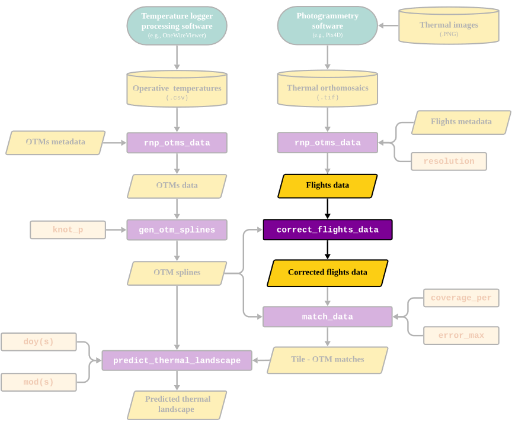

Correcting flight data
correct_flights_data.RmdOverview
The goal of this vignette is to illustrate how to correct temperature data obtained using thermal photogrammetry. By correcting, we are referring to the process of transforming the surface temperature measurements made via the IR cameras mounted on a drone into operative temperatures as measured using an operative temperature model (OTM). Below we highlight the section of the package’s workflow that is covered in this vignette:

The need for this correction stems from the fundamental difference between temperature estimates made using an IR camera and an OTM. This is because the IR camera measurement is influenced by a wide range of factors including the object’s emissivity, the conditions in which the image is taken (ambient temperature, amount of light etc. see Playà-Montmany & Tattersall 2021 for further details).
In contrast, OTMs are designed to match the internal body temperature of an organism as closely as possible. This is achieved by enclosing a temperature logger inside of a structure of a similar size, surface and overall thermal properties to the the organism of interest. This methodology has been used extensively in the field of thermal ecology and recent advances have minimized the costs of production and maximized the accuracy of OTMs (see Alujević et al. 2024).
Due to the above, the IR camera of the drone and the OTM will ultimately record fundamentally different temperature values For the thermal measurements estimated using the drone to be representative of what the organism is experiencing, they must be corrected such that they instead describe operative temperatures.
Correcting flights data
To transform surface temperature measurements obtained using a
drone-mounted IR camera into operative temperature measurements, the
throne package includes the
correct_flights_data function. This function will correct
the IR temperature measurements obtained during a flight into operative
temperature measurements. Next, we present the inputs, processes and
outputs of the correct flights data function.
Inputs
To perform such correction, the function will take 2 inputs:
A
flights_datadata.frameobtained through thernp_flights_data.An
otm_splinesnestedtibbleobtained through thegen_otm_splinesfunction.
Both data sets contain positional information (x and
y UTM coordinates), which will be crucial to perform the
correction.
Processes
Obtaining correction data and the
eval_flights_correction function
The first step when correcting flight data is to filter it to contain
only tiles (i.e., unique x and y coordinate
combinations) where OTMs were actually deployed. Once these tiles are
filtered, the function will use the day and OTM specific spline models
to estimate the temperature of each OTM at the exact year,
day of the year (doy) and minute of the day
(mod) at which each of the flights took place. The result
will be a data.frame where each unique x &
y combination in each unique year,
doy and mod has a surface temperature
measurement (surf_temp, from the drone) associated with an
operative temperature measurement (op_temp, from the OTM).
The throne package also contains a function to obtain this
data called eval_flights_correction.
# calculate OTM splines
otms_splines <- gen_otm_splines(otm_data = otms_data, knot_p = 0.02)## Generating OTM & doy-specific spline models...## | | | 0% | |= | 1% | |= | 2% | |== | 2% | |== | 3% | |=== | 4% | |=== | 5% | |==== | 5% | |==== | 6% | |===== | 7% | |===== | 8% | |====== | 8% | |====== | 9% | |======= | 10% | |======= | 11% | |======== | 11% | |========= | 12% | |========= | 13% | |========== | 14% | |========== | 15% | |=========== | 15% | |=========== | 16% | |============ | 17% | |============ | 18% | |============= | 18% | |============= | 19% | |============== | 20% | |============== | 21% | |=============== | 21% | |=============== | 22% | |================ | 23% | |================= | 24% | |================== | 25% | |================== | 26% | |=================== | 27% | |==================== | 28% | |==================== | 29% | |===================== | 30% | |===================== | 31% | |====================== | 31% | |====================== | 32% | |======================= | 33% | |======================== | 34% | |========================= | 35% | |========================= | 36% | |========================== | 37% | |=========================== | 38% | |=========================== | 39% | |============================ | 40% | |============================= | 41% | |============================= | 42% | |============================== | 43% | |============================== | 44% | |=============================== | 44% | |================================ | 45% | |================================ | 46% | |================================= | 47% | |================================== | 48% | |================================== | 49% | |=================================== | 50% | |==================================== | 51% | |==================================== | 52% | |===================================== | 53% | |====================================== | 54% | |====================================== | 55% | |======================================= | 56% | |======================================== | 56% | |======================================== | 57% | |========================================= | 58% | |========================================= | 59% | |========================================== | 60% | |=========================================== | 61% | |=========================================== | 62% | |============================================ | 63% | |============================================= | 64% | |============================================= | 65% | |============================================== | 66% | |=============================================== | 67% | |================================================ | 68% | |================================================ | 69% | |================================================= | 69% | |================================================= | 70% | |================================================== | 71% | |================================================== | 72% | |=================================================== | 73% | |==================================================== | 74% | |==================================================== | 75% | |===================================================== | 76% | |====================================================== | 77% | |======================================================= | 78% | |======================================================= | 79% | |======================================================== | 79% | |======================================================== | 80% | |========================================================= | 81% | |========================================================= | 82% | |========================================================== | 82% | |========================================================== | 83% | |=========================================================== | 84% | |=========================================================== | 85% | |============================================================ | 85% | |============================================================ | 86% | |============================================================= | 87% | |============================================================= | 88% | |============================================================== | 89% | |=============================================================== | 89% | |=============================================================== | 90% | |================================================================ | 91% | |================================================================ | 92% | |================================================================= | 92% | |================================================================= | 93% | |================================================================== | 94% | |================================================================== | 95% | |=================================================================== | 95% | |=================================================================== | 96% | |==================================================================== | 97% | |==================================================================== | 98% | |===================================================================== | 98% | |===================================================================== | 99% | |======================================================================| 100%## Spline generation complete
# evaluate flights correction
head(eval_flights_correction(flights_data, otms_splines))## x y year doy mod_start mod_end surf_temp op_temp
## 1 275285 4416482 2023 236 515 519 20.36518 19.57843
## 2 275285 4416485 2023 236 515 519 21.53136 31.43599
## 3 275285 4416491 2023 236 515 519 17.11944 17.67412
## 4 275286 4416495 2023 236 515 519 21.85653 23.97190
## 5 275287 4416498 2023 236 515 519 23.37091 31.99681
## 6 275288 4416486 2023 236 515 519 25.09869 21.50428The
data.frameabove contains themod_startandmod_endcolumns. These are themodwhen the flight started and when the flight ended. In the example data, all flights were relatively fast (~ 4 minutes) but to cover larger areas flights are going to be longer. In that case, the predicted operative temperature (op_temp) for that OTM on that tile is the average temperature for the duration of the flight.
Using this data we can visualize the need for a correction:

As shown above, there is a consistent bias between measurements, with
IR temperatures being generally cooler than operative temperatures when
both have high values and the opposite holding true when both have low
values. Note that the line of best linear fit is substantially different
from the dashed line that indicates the ideal 1:1 relationship. This can
be appreciated when running a simple linear regression between
surf_temp and op_temp.
# define correction data
correction_data <- eval_flights_correction(flights_data, otms_splines)
# run linear model between surface and operative temperature
mod <- lm(surf_temp ~ op_temp, data = correction_data)
summary(mod)$coefficients## Estimate Std. Error t value Pr(>|t|)
## (Intercept) 12.1501683 1.45271222 8.363782 1.685716e-15
## op_temp 0.6059729 0.03658133 16.565085 2.236395e-45
summary(mod)$r.squared## [1] 0.4517634The (Intercept) and the slope (i.e., the
Estimate of op_temp above) are
12.15 and 0.6 when, ideally, they should be at
0 and 1 respectively. Further the \(R^2\)of this relationship is
0.45. For a good match between these two measurements we
would also want the \(R^2\) to be
closer to 1. To solve this
correct_flights_data implements a two-step correction
approach allowing users to correct the data as they see most appropriate
for their system.
Time correction
The first step will be to perform a time-specific correction. Because
flights took place at different days and different mod both
the environmental temperature and the light conditions where variable.
This leads to consistent biases between between measurements (i.e.,
op_temp - surf_temp) by time of the day (i.e.,
mod):

Flights closer to the middle of the day (i.e., 11:00 - 13:00 or
mod 660 - 800) when light conditions are optimal tend to be
less biased, whereas flights earlier in the morning or the afternoon are
more affected. Based on this, the first correction will 1)
calculate the average bias for each flight and 2)
add that bias to all surf_temp measurements of that
flight. Once this is implemented the time-specific bias is
removed:

Once this correction is implemented the relationship between
surf_temp and op_temp looks like:

# run linear model between time corrected ir temp and operative temp.
mod <- lm(surf_temp_corr ~ op_temp, data = correction_data)
summary(mod)$coefficients## Estimate Std. Error t value Pr(>|t|)
## (Intercept) 16.0349437 1.13967755 14.06972 1.309373e-35
## op_temp 0.5899107 0.02869868 20.55532 3.345447e-61
summary(mod)$r.squared## [1] 0.5592448Although the model’s Intercept and slope have worsened
(from 12.15 to 16 and from 0.6 to
0.58) the \(R^2\) of the
model has improved (from 0.45 to 0.56) as can
be appreciated by the reduced amount of error around the line of best
fit.
While we believe this first correction step is beneficial. We leave it up to the users to specify:
If they want the function to perform it at all by setting the parameter
time_correctionof the function to eitherTRUE(for it to be performed) orFALSE.What metric do they want to use to summarize the bias of each flight by setting the parameter
time_correction_metricto either"mean","median"or"mode". For most cases,"mean” would be ideal but"median” or"mode” could be more appropriate if the data is heavily skewed after inspection.
To further aid in the inspection of the data and inform users on the
best approach to follow, the eval_flights_correction data
also includes the parameter summary, which if set to
TRUE, provides a set of summary statistics of the bias
between IR and operative temperatures for each flight consider. Below is
an example on how to run eval_flights_correction for
diagnostic purposes:
correction_data_summary <- eval_flights_correction(flights_data, otms_splines, summary = TRUE)## Summary statistics of bias between op_temp and surf_temp provided
correction_data_summary## # A tibble: 10 × 13
## year doy mod_start mod_end mean_bias median_bias mode_bias sd_bias
## <dbl> <dbl> <dbl> <dbl> <dbl> <dbl> <dbl> <dbl>
## 1 2023 236 515 519 4.57 5.02 5.45 4.65
## 2 2023 236 638 642 -0.441 0.202 -1.67 4.69
## 3 2023 236 657 661 1.19 0.736 -0.8 4.66
## 4 2023 236 680 684 1.14 1.48 1.8 4.47
## 5 2023 236 741 745 8.49 7.79 10.8 4.37
## 6 2023 237 627 631 1.11 1.09 2.6 4.62
## 7 2023 237 649 653 1.22 1.24 0.133 4.76
## 8 2023 238 926 930 3.20 4.56 5.4 5.02
## 9 2023 238 976 980 6.30 6.04 5.77 5.52
## 10 2023 238 1051 1055 5.99 5.89 6.62 3.93
## # ℹ 5 more variables: skewness_bias <dbl>, max_bias <dbl>, min_bias <dbl>,
## # max_abs_bias <dbl>, min_abs_bias <dbl>Users can also use this summary statistics to visualize the bias within their flights. For instance, below is the mean, median, and mode of the bias for each of the flights in the example data set together with the maximum and minimum bias observed:

Flight-specific correction
Next, the correct_flights_data function will apply a
second correction (provided that the user chooses to perform the first
correction by setting time_correction = TRUE). To achieve
this the function will correct based on the temperature value itself.
The function will use the estimates of the linear regression between
surface and operative temperatures of tiles where OTMs where present and
applying them to all surface temperatures measured within a flight. In
essence, the function runs a linear regression such that:
\[IRT\sim\alpha + \beta OT\] Where \(IRT\) is the surface temperature (measured via an IR camera, thus the abbreviation), \(OT\) is the operative temperature, \(\alpha\) is the intercept of the relationship and \(\beta\) is the slope of the relationship. We can use the estimates for \(\alpha\) and \(\beta\) to correct \(IRT\) into \(OT\) as:
\[OT = \frac{IRT - \alpha}{\beta}\]
Alternatively, correct_flights_data also offers the option
of performing a flight specific correction. This is achieved by setting
the flight_specific_correction parameter to
TRUE. In this case it models \(IRT\) not only as a function of \(OT\) but also as a function of day of the
year (\(DOY\)) and minute of the day
(\(MOD\)) such that:
\[IRT\sim\alpha + \beta_1 OT + \beta_2 DOY + \beta_3 MOD\]
Where \(\beta_1\) is the effect of \(OT\), \(\beta_2\) is the effect of \(DOY\) and \(\beta_3\) is the effect of \(MOD\) is the minute of the day. We can use the estimates for \(\alpha\), \(\beta_1\), \(\beta_2\) and \(\beta_3\) to correct \(IRT\) into \(OT\) as:
\[OT = \frac{IRT - \alpha - \beta_2 DOY - \beta_3 MOD}{\beta_1} \] Below we run multiple linear models to show how each of the corrections influences the relationship between surface and operative temperatures:
# run linear model assuming no time correction or flight specific correction
mod1 <- lm(surf_temp ~ op_temp, data = correction_data)
summary(mod1)$coefficients## Estimate Std. Error t value Pr(>|t|)
## (Intercept) 12.1501683 1.45271222 8.363782 1.685716e-15
## op_temp 0.6059729 0.03658133 16.565085 2.236395e-45
summary(mod1)$r.squared## [1] 0.4517634
# run model assuming no time correction but flight specific correction
mod2 <- lm(surf_temp ~ op_temp + doy + mod_start, data = correction_data)
summary(mod2)$coefficients## Estimate Std. Error t value Pr(>|t|)
## (Intercept) -2.683225e+02 1.212445e+02 -2.213069 2.757467e-02
## op_temp 6.364703e-01 3.757752e-02 16.937531 8.784397e-47
## doy 1.209171e+00 5.189914e-01 2.329848 2.041510e-02
## mod_start -9.446292e-03 2.767644e-03 -3.413117 7.219671e-04
summary(mod2)$r.squared## [1] 0.4715391These corrections can be applied on top of the time correction performed earlier:
# run linear model assuming time correction but no flight specific correction
mod3 <- lm(surf_temp_corr ~ op_temp, data = correction_data)
summary(mod3)$coefficients## Estimate Std. Error t value Pr(>|t|)
## (Intercept) 16.0349437 1.13967755 14.06972 1.309373e-35
## op_temp 0.5899107 0.02869868 20.55532 3.345447e-61
summary(mod3)$r.squared## [1] 0.5592448
# run linear model assuming time correction and flight specific correction
mod4 <- lm(surf_temp_corr ~ op_temp + doy + mod_start, data = correction_data)
summary(mod4)$coefficients## Estimate Std. Error t value Pr(>|t|)
## (Intercept) 53.353422125 94.22805058 0.5662159 5.716307e-01
## op_temp 0.553774534 0.02920426 18.9621149 8.428119e-55
## doy -0.170583405 0.40334649 -0.4229203 6.726281e-01
## mod_start 0.006013041 0.00215094 2.7955409 5.483729e-03
summary(mod4)$r.squared## [1] 0.5830597As seen above, the \(R^2\) value of the models increases when both time and flight specific corrections are applied. We can also visualize this:
# re-run correction
correction_data <- eval_flights_correction(flights_data, otms_splines)
# get year, doy and mod correction factors
time_correction_factors <- correction_data |>
group_by(year, doy, mod_start) |>
summarise(time_corr_factor = mean(op_temp - surf_temp))
# merge date and time correction factors with correlation data
correction_data <- merge(correction_data, time_correction_factors,
by = c("year", "doy", "mod_start"), all = TRUE)
# apply time correction
correction_data$surf_temp_corr_time <- correction_data$surf_temp + correction_data$time_corr_factor
# apply corrections
correction_data <- correction_data |>
mutate(ir_temp_corr_00 = (surf_temp - mod1$coefficients[1])/mod1$coefficients[2],
ir_temp_corr_01 = (surf_temp - mod2$coefficients[1] - mod2$coefficients[3]*doy - mod2$coefficients[4]*mod_start) / mod1$coefficients[2],
ir_temp_corr_10 = (surf_temp_corr_time - mod3$coefficients[1])/mod3$coefficients[2],
ir_temp_corr_11 = (surf_temp_corr_time - mod4$coefficients[1] - mod4$coefficients[3]*doy - mod4$coefficients[4]*mod_start) / mod4$coefficients[2]) |>
pivot_longer(cols = c(surf_temp, surf_temp_corr_time, ir_temp_corr_00, ir_temp_corr_01, ir_temp_corr_10, ir_temp_corr_11),
names_to = "correction", values_to = "ir_temp_corr") |>
mutate(correction = ifelse(correction == "surf_temp", "0 - Uncorrected", correction),
correction = ifelse(correction == "surf_temp_corr_time", "1 - Time corrected", correction),
correction = ifelse(correction == "ir_temp_corr_00", "2 - Temp. corrected", correction),
correction = ifelse(correction == "ir_temp_corr_01", "3 - Temp. corrected, FS", correction),
correction = ifelse(correction == "ir_temp_corr_10", "4 - Time & Temp. corrected", correction),
correction = ifelse(correction == "ir_temp_corr_11", "5 - Time & Temp. corrected, FS", correction))
# plot different corrections
correction_data |>
ggplot(aes(x = op_temp, y = ir_temp_corr, col = mod_start)) +
geom_point(size = 2, alpha = 0.5) +
geom_abline(intercept = 0, slope = 1, col = "black", linewidth = 1.25, linetype = 2) +
geom_smooth(method = "lm", col = "black") +
scale_color_gradient2(low = "black", mid = "orange", high = "darkblue",midpoint = 12*60) +
xlab("Operative Temperature (°C)") +
ylab("Surface Temperature (°C)") +
facet_wrap(~correction, scales = "free") +
theme_minimal() +
labs(colour = "MOD")
Where Temp. is short for temperature and “FS” is short for “Flight-specific”. Additionally, a temperature correction refers to the second correction (i.e., based on the temperature value itself)
As seen above, applying a temperature and time correction together is the approach that both makes the intercept of the relationship be at \(0\) and the slope \(1\), while maximizing \(R^2\). Performing a flight-specific correction can further improve this relationship but not substantially. With this information in hand, we leave it out to the user to decide which correction to apply.
Output
The output of the correct_flights_data function is a
data.frame of the same characteristics as the
flight_data input but substituting the
surf_temp for an op_temp column, corresponding
to the surface temperatures now corrected to be equivalent to operative
temperatures. Below we show the before and after effect of applying the
correction correcting by both time (using the mean bias) and
temperature:
# perform correction
flights_data_corr <- correct_flights_data(flights_data,
otms_splines,
time_correction = TRUE,
time_correction_metric = "mean",
flight_specific_correction = TRUE)
# show output of correction
head(flights_data_corr)## x y year doy mod_start mod_end op_temp
## 1 275330 4416550 2023 236 515 519 25.645121
## 2 275331 4416550 2023 236 515 519 24.310203
## 3 275332 4416550 2023 236 515 519 21.950666
## 4 275333 4416550 2023 236 515 519 23.238916
## 5 275334 4416550 2023 236 515 519 14.946816
## 6 275335 4416550 2023 236 515 519 -2.077917
# merge and compare data
merge(flights_data, flights_data_corr,
by = c("x", "y", "year", "doy", "mod_start", "mod_end"))|>
filter(mod_start %in% c(515, 680, 1051)) |>
mutate(hour = round(mod_start/60)) |>
pivot_longer(cols = c(surf_temp, op_temp),
names_to = "type", values_to = "temp") |>
mutate(type = ifelse(type == "surf_temp",
"Surface Temperature", "Operative Temperature")) |>
ggplot(aes(x = x, y = y, fill = temp)) +
geom_raster() +
scale_fill_viridis(option = "magma", limits = c(5,60)) +
facet_grid(cols = vars(type), rows = vars(hour)) +
theme_minimal() +
theme(
axis.text = element_blank(),
axis.title = element_blank(),
strip.text = element_text(size = 12, face = "bold"),
panel.grid = element_blank()
) +
guides(fill = guide_colorbar(title = "Temp. (°C)"))  Next, we will introduce the final step of the
Next, we will introduce the final step of the throne
workflow. How to use the corrected flights data in combination with the
OTM-specific splines to first match the two data types and ultimately
predict thermal landscapes.